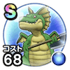

バトルレックス
試練の扉はやぶさ斬りこころ最大コスト+4スキルの斬撃・体技ダメージ+7％戦闘終了時にMPを6回復するメラ属性耐性+7％幻惑耐性+5％ / 7.0点
くわしい特徴
【ランク特殊効果】 竜のはやぶさ斬りこころ最大コスト+4スキルの斬撃・体技ダメージ+7％ブレスダメージ+3%戦闘終了時にMPを7回復するメラ属性耐性+7％幻惑耐性+5％踊り耐性+5%はやぶさ斬りこころ最大コスト+4スキルの斬撃・体技ダメージ+7％戦闘終了時にMPを6回復するメラ属性耐性+7％幻惑耐性+5％こころ最大コスト+4スキルの斬撃・体技ダメージ+6％戦闘終了時にMPを4回復するメラ属性耐性+5％幻惑耐性+3％